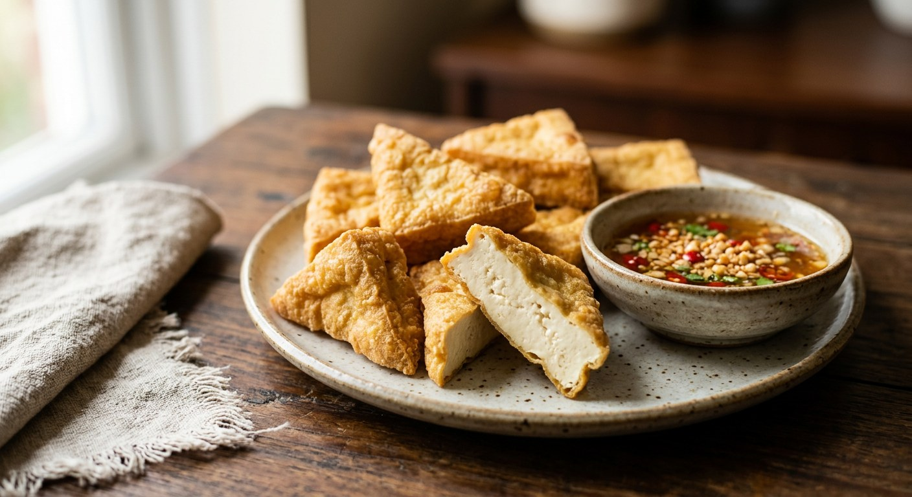

Fried tofu — soft tofu fried until crisp outside and custardy inside, served with a sweet-sour peanut and chilli dipping sauce. The vegetarian starter that outlives every trend.

เต้าหู้ทอด
Tao hoo tod is the dish that converts tofu sceptics. Soft yellow tofu, fried until the outside shatters and the inside stays warm and custardy, served with a sweet-sour dipping sauce flecked with chilli and crushed peanut. On UK Thai menus it anchors the vegetarian section — often the only starter on the page that vegans and meat-eaters order in equal numbers.
The dish is defined by its contrast, and the contrast comes from the tofu choice: soft yellow tofu (tao hoo leuang nim), never the firm white brick, never silken. The soft block fries to a crisp skin with a molten centre; the firm brick just dries out.
| Thai | English | Amount |
|---|---|---|
| เต้าหู้เหลืองนิ่ม | Soft yellow tofu, soft or firm-soft, not silken | 2 blocks |
| น้ำมันปาล์ม | Oil for frying, palm or any neutral frying oil | as needed |
| Thai | English | Amount |
|---|---|---|
| น้ำตาลทราย | White sugar | 60g |
| น้ำตาลปี๊บ | Palm sugar, or all white sugar if you prefer | 60g |
| เกลือป่น | Salt | 1 tsp |
| น้ำส้มสายชู | White vinegar | 5 tbsp |
| น้ำเปล่า | Water | 3 tbsp |
| พริกชี้ฟ้า | Red spur chillies, finely chopped, added at the end | 1-2 |
| ถั่วลิสงคั่ว | Roasted peanuts, crushed, added at the end | 2 tbsp |
The classic nam jim — sugar, palm sugar, vinegar, salt, simmered to a syrup, with chopped chilli and crushed roasted peanuts stirred in at the end — is the same three-flavour family as the sauces served with spring rolls and fried chicken. It must be cooled before the peanuts and chilli go in, or the heat wilts them and dulls the bite.
The one skill is not turning too early. Tofu needs a minute undisturbed to set a skin; flip it before then and it tears, and the exposed custard soaks up oil. Let the first side go pale gold, then turn.
This recipe is translated from the following Thai-language sources. Where they disagree, we've said so.
1. Aroifin — tao hoo tod — https://www.aroifin.com/archives/26439
2. Kapook — tao hoo tod with peanut sauce by Krua Ban Sai — https://cooking.kapook.com/view228022.html
3. Kapook — nam jim tao hoo tod — https://cooking.kapook.com/view274388.html